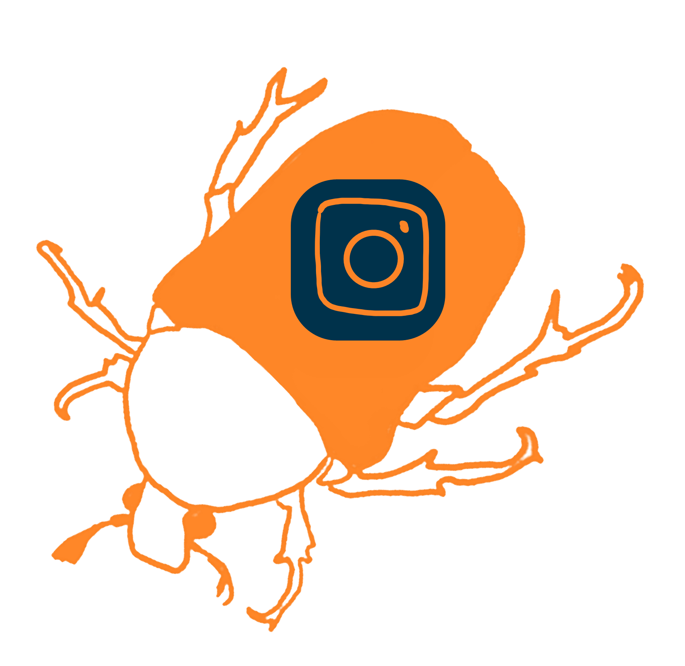

Symposion GJK 2020/21
Symposion GJK 2020/21
(ne)řád jako narušení struktury, výchylka, výjimka, chyba, mutace komplikující situaci
(ne)řád jako svoboda, volnost, odklon od norem a konvencí.
(ne)řád jako záškodník, parazit, narušitel a vetřelec.
(ne)řád jako rozmanitost a pestrost, která obohacuje.
(ne)řád jako vzdor a rebelie odmítající pravidla.
(ne)řád jako divokost, nespoutanost, bordel a chaos.

ne//řád harmonogram
Harmonogram se připravuje
ne//řád kontakt
Brouka vám do hlavy nasadíme na Gymnáziu Jana Keplera s řádnou adresou Parléřova 2. Ještě než proklouznete do budovy školy, přisajte se na naše sociální sítě a naslouchejte nespoutaný slovům. A kdybyste se cítili sami uprostřed všeobecného chaosu, napište nám na mail.
Gymnázium Jana Keplera
Parléřova 2, 169 00 Praha 6
